5 Rendered Signs Idea
Ramp to Success
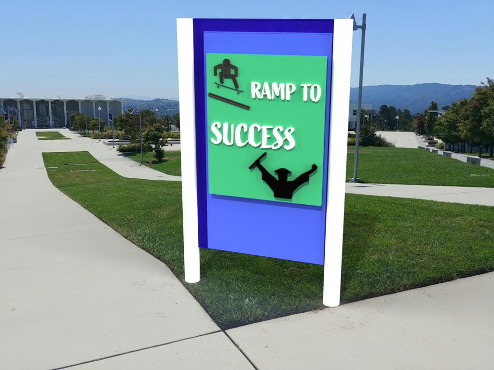
The Choice
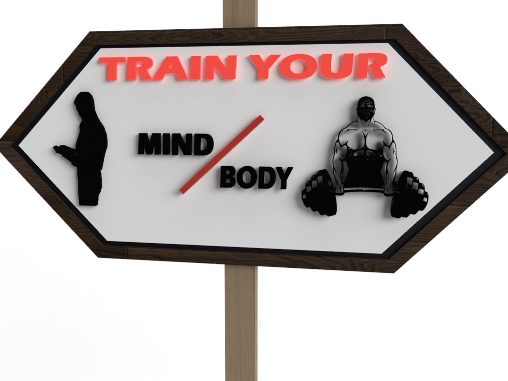 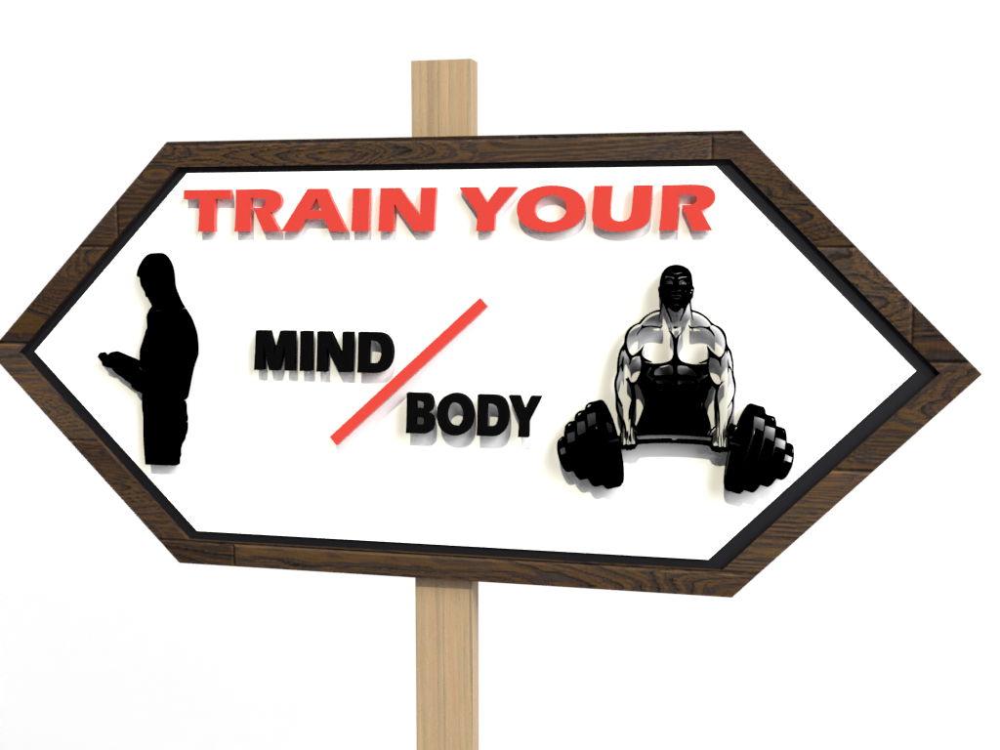
Beware
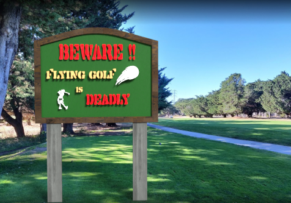 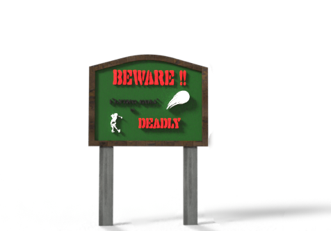
Mask Advantage
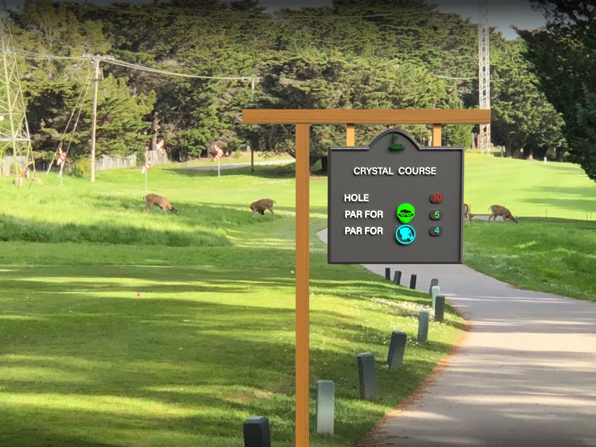 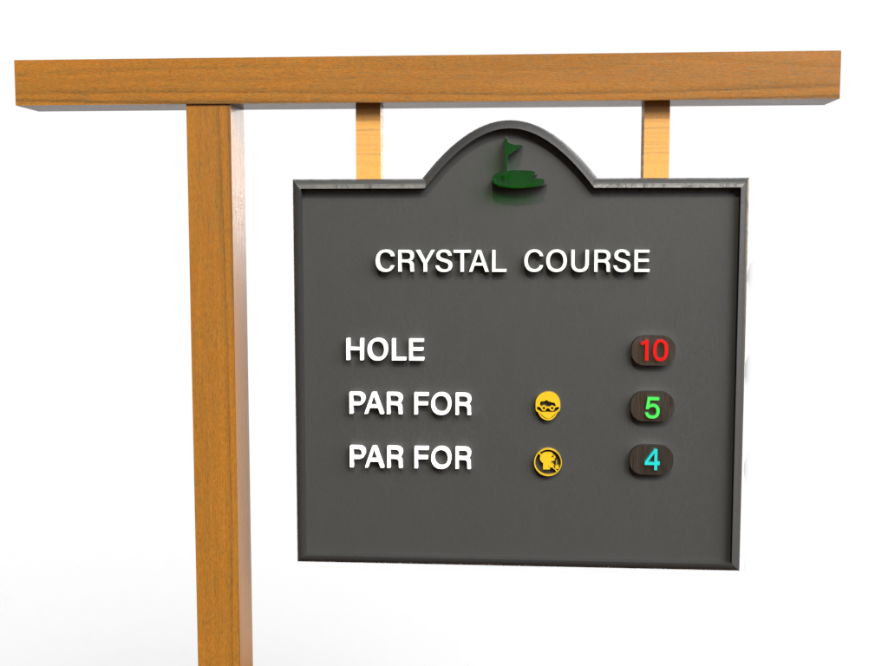
Maze
Final Rendered Sings With The Actual Location
This sign is placed at the College of San Mateo. The community college where I tranfered from. The idea of the sign came looking at the ramp which the skater uses to come down. The ramp leads straight to the hall that acoomodated the graduation ceremomy. So, I wanted to make a sign that would say that this the ramp which leads to the graduation.
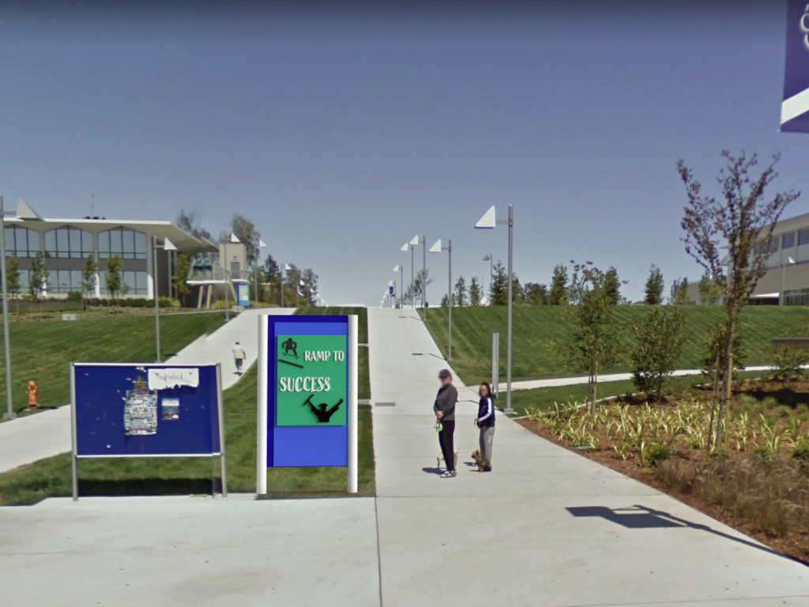 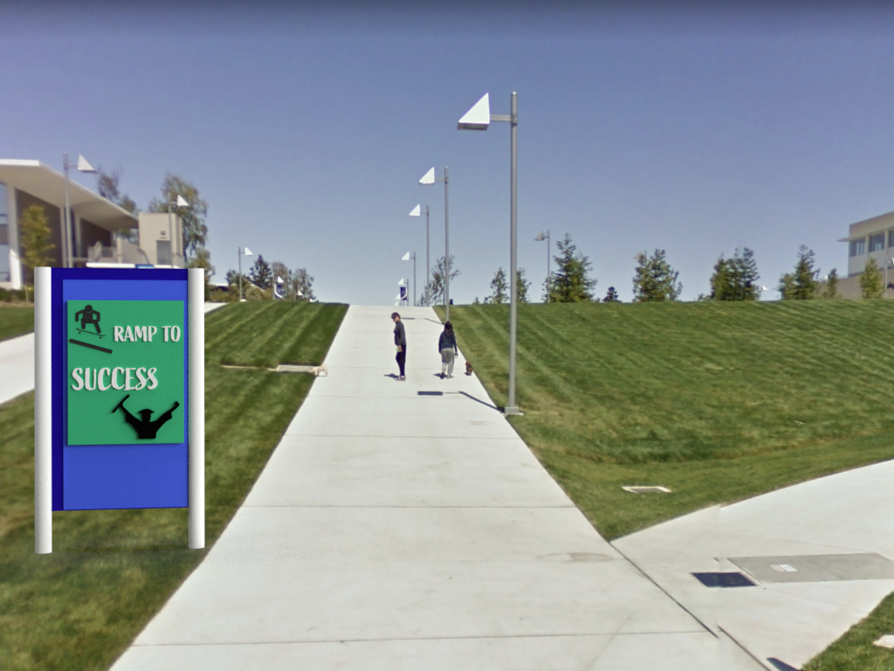
The sign idea came when I was studying in the College of San Mateo. There is this intersection which leads to two dfifferent buildinds. One leads to the CSM library and another to the gym. Me and my friends would alwys diverge at this intersection. So, I wanted to put a sign that lets us decide which path we shoud take.
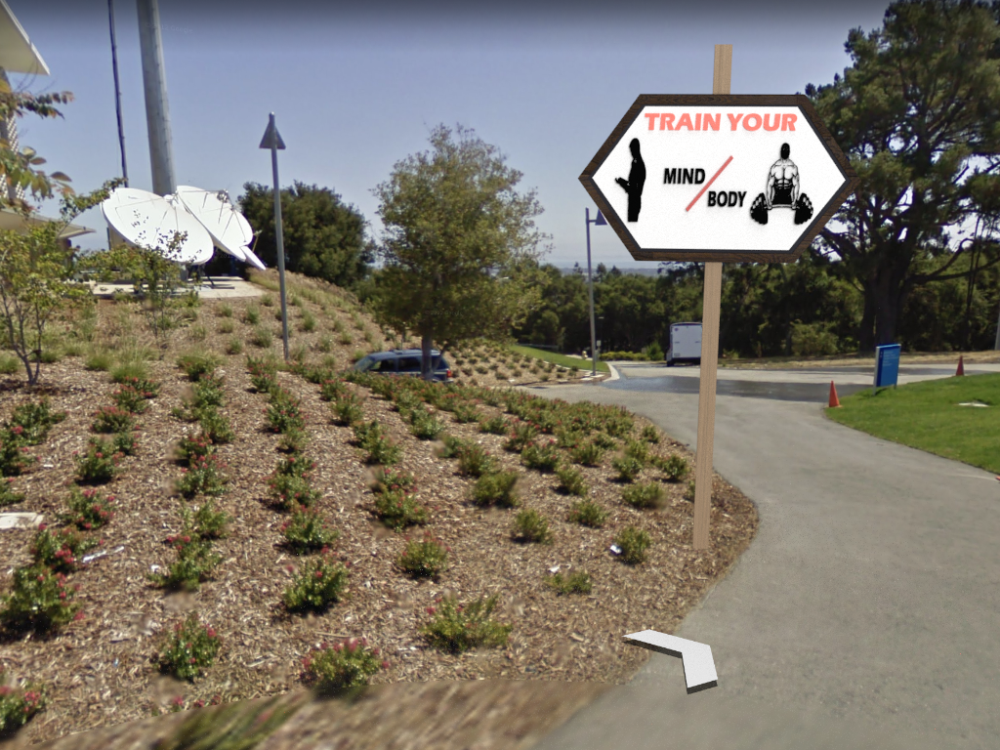 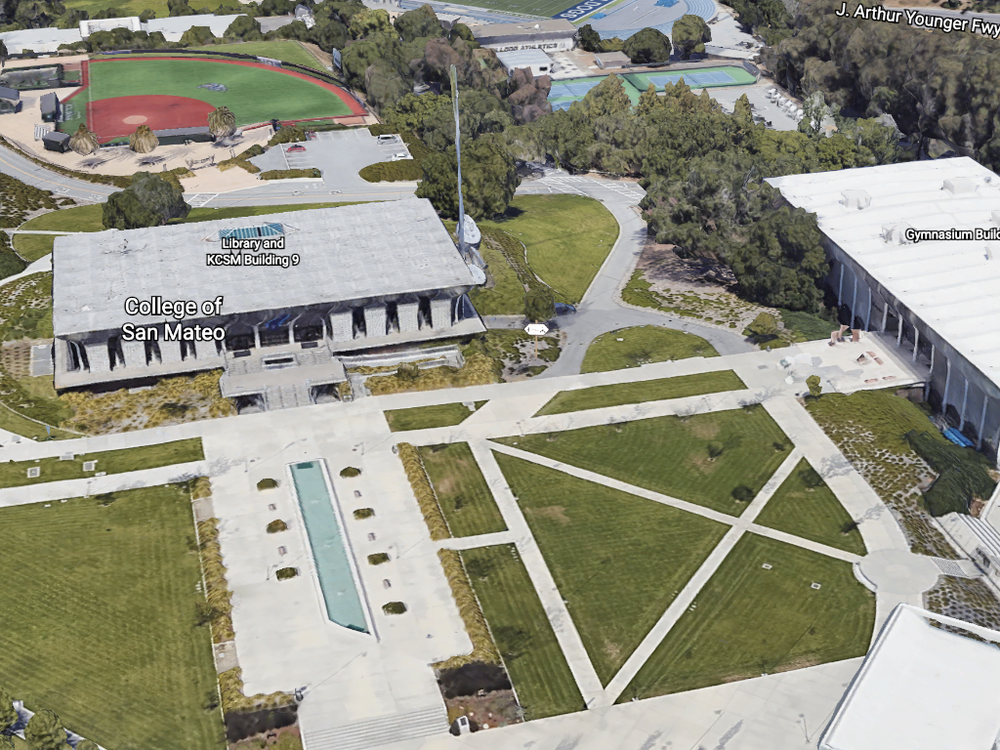
This sign is inspired by the COVID-19 and its protocal. So, anyone who follows the COVID-19 rules would get a free stroke while playing the golf since he/she is helping reduce spread of COVID. Whoever, doesn't follow the rules would not get extra stroke and thus have less advantage with the golfer who follow the rules.

This sign is placed at the place I work at. Everytime, the people would just walk around the golf course not really thhing about the golf balls hitting them. So, to aware the people who are walkinby I wanted to make them caution that beware for the golf ball since they can come from any directions.
This sign is inspired by my apartment number. My apartment complex had 30 units but the there are no sign anywhere in the building that says certain units are allocated in 1st or 3rd floor. So, I wanted to make a funny and scarcastic signs that shows the maze and my apartment unit in the middle signifying that finding my apartment is very difficult.